Episodes Stereo: left = Moshi , right = user + friend + noise . Use headphones.
Red band = hold (Moshi must stay silent). Dashed line = release reference (cue end, or instr_end + N). Dark red ticks = distractors.
Bottom strip = Moshi's text stream as built by moshi-finetune's Interleaver: grey PAD, red EPAD, blue word tokens.
s00_B1_std B1_std · ✅
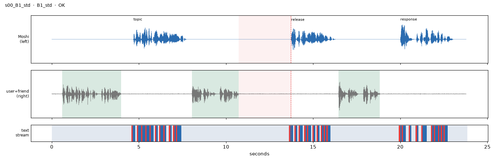
hold_s=3.01, align_vs_audio_s=[-0.003, 0.004], timer_err_s=0.008, min_turn_snr_db=28.0, epad_before_release=True, pads_in_hold=34, hold_frames=35PAD×5 EPAD ▁Alri ght, PAD EPAD
script user 0.6s Help me decide something for my trip, like, I can't make up my mind.
moshi 4.7s Okay! Would you rather visit Paris in the rain or Rome in the heat?
user 8.0s I'll need about three seconds. Ask me again after that.
moshi 13.7s Alright, so Paris in the rain or Rome in the heat?
user 16.5s Rome, I guess. I hate being cold.
moshi 20.0s Rome it is! Just pack sunscreen and drink lots of water.
s01_B1_double B1_double · ✅
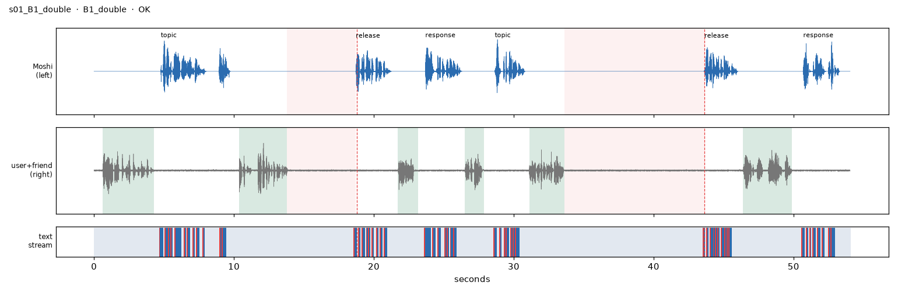
hold_s=4.91, align_vs_audio_s=[-0.005, 0.008], timer_err_s=-0.091, min_turn_snr_db=22.7, epad_before_release=True, pads_in_hold=58, hold_frames=59PAD×5 EPAD ▁Alri ght, PAD EPAD
script user 0.6s Give me a mental math question about flights, I'm trying to practice.
moshi 4.8s A flight leaves at two in the afternoon and lasts five hours. When does it land?
user 10.4s Ooh, tough one. Give me five seconds to think, then ask again.
moshi 18.7s Alright, so what time does that five hour flight land?
user 21.7s Seven in the evening, right?
moshi 23.7s Right on the money. Seven o'clock, no time zones needed.
user 26.5s Alright, ask me another.
moshi 28.7s Sure! What gets wetter the more it dries?
user 31.1s Hmm, give me ten seconds and then ask me that again.
moshi 43.6s So, any guess on what gets wetter as it dries?
user 46.4s Oh, like, a towel? Yeah, a towel.
moshi 50.7s Nailed it! A towel it is. You're good at this.
s02_B1_early B1_early · ✅
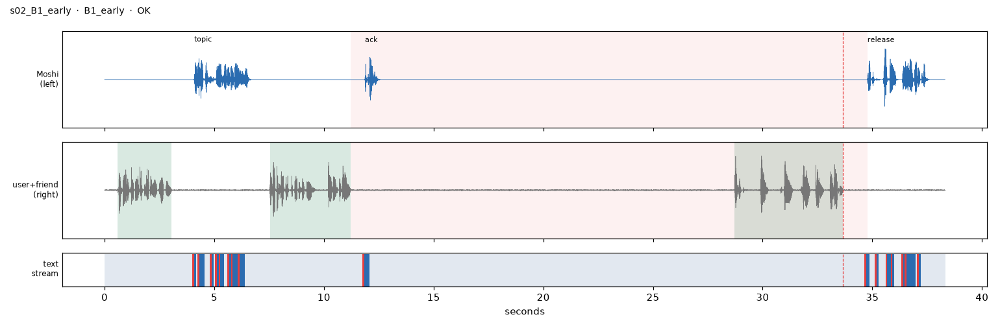
hold_s=23.56, align_vs_audio_s=[-0.006, 0.002], cue_latency_s=1.119, min_turn_snr_db=26.1, epad_before_release=True, pads_in_hold=276, hold_frames=277PAD×5 EPAD ▁Perf ect! PAD×2
script user 0.6s Quiz me on something about the weather, like, anything.
moshi 4.1s Easy one first. How many seasons are there in a year?
user 7.5s Let me think about that for thirty seconds. Then ask again.
moshi 11.9s Of course.
user 28.7s Got it. Four. Spring, summer, fall, and winter.
moshi 34.8s Perfect! All four, and in the right order too.
s03_B1_rescind B1_rescind · ✅
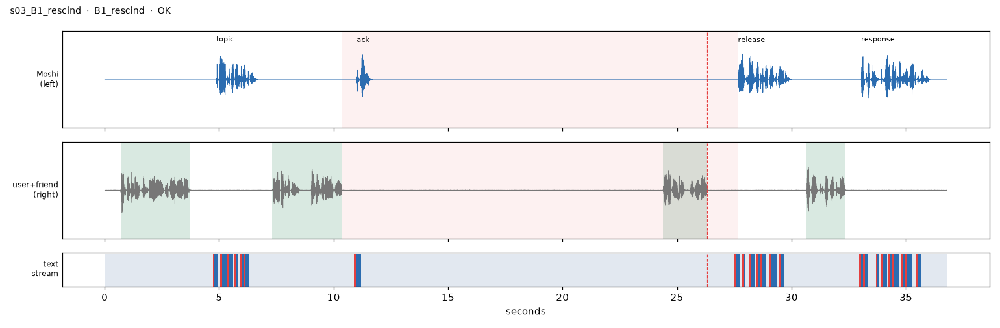
hold_s=17.29, align_vs_audio_s=[-0.004, 0.003], cue_latency_s=1.338, min_turn_snr_db=32.0, epad_before_release=True, pads_in_hold=197, hold_frames=198PAD×5 EPAD ▁Alri ght, PAD EPAD
script user 0.7s Ask me something that tests my memory, I'm kind of in the mood.
moshi 4.9s Okay, what's the capital city of Japan?
user 7.3s Hang on, thirty seconds. Then ask me one more time.
moshi 11.0s Of course.
user 24.4s Oh, wait, I'm ready. Ask me again.
moshi 27.7s Alright, so what's the capital of Japan again?
user 30.6s Tokyo. It's Tokyo, for sure.
moshi 33.0s Yep, Tokyo! You clearly paid attention in geography class.
s04_B2_std B2_std · ✅
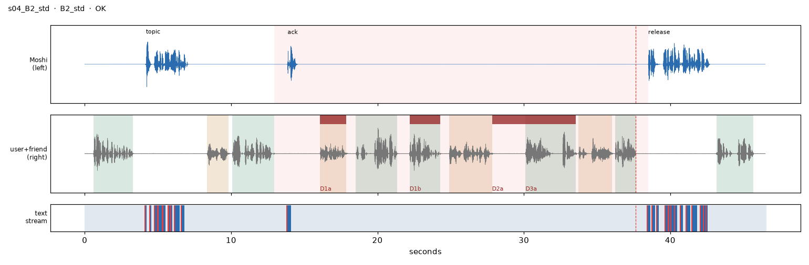
hold_s=25.56, align_vs_audio_s=[-0.001, 0.005], cue_latency_s=0.856, min_turn_snr_db=29.2, epad_before_release=True, pads_in_hold=298, hold_frames=299PAD×5 EPAD ▁Welc ome PAD EPAD
script user 0.6s I'm trying to find a great soup recipe for this weekend!
moshi 4.2s Fun! Do you want something creamy, or more of a brothy soup?
friend 8.3s Sorry to interrupt, got a minute?
user 10.1s Can you wait? Chris is here. Don't talk until I'm back.
moshi 13.9s Of course.
friend 16.1s Did you ever call the guy about the bike?
user 18.5s I did! He said it'll be ready Thursday.
user 22.2s Did you want to ride together once it's fixed?
friend 24.9s Absolutely, the weather's supposed to be great all week.
user 30.1s Anyway, I'm done worrying about it. Thursday it is!
friend 33.7s Good plan. Maybe we can ride along the river.
user 36.2s Okay, sorry, where were we?
moshi 38.5s Welcome back! Now, about your weekend soup, creamy or brothy, which sounds better to you?
user 43.2s Creamy, definitely! Something really cozy.
s05_B3_std B3_std · ✅
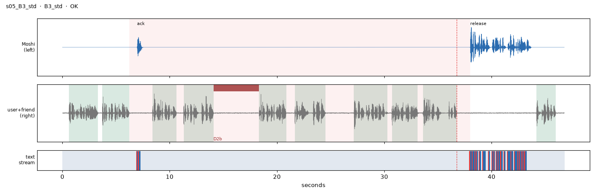
hold_s=31.79, align_vs_audio_s=[0.002, 0.003], cue_latency_s=1.262, min_turn_snr_db=26.4, epad_before_release=True, pads_in_hold=380, hold_frames=381PAD×5 EPAD ▁Mosh i EPAD ▁thin
script user 0.6s I am trying to choose a painting for my living room wall.
user 3.7s Let me get through all three before you say anything.
moshi 7.0s Go ahead.
user 8.4s The first one is a big painting of the sea.
user 11.3s It has deep blue colors and looks very calm.
user 18.3s The second option is a small picture of a old man.
user 21.7s The face is serious, and the frame is gold.
user 27.2s And the third one, a bright painting with many shapes.
user 30.7s It is modern and makes the room feel alive.
user 33.6s So those are the three options. What do you think?
moshi 38.0s Moshi thinks the sea painting is calm, the old man is a bit heavy, and the bright shapes would give your room the most energy.
user 44.2s Yes, the sea is very peaceful.
s06_B3_early B3_early · ✅
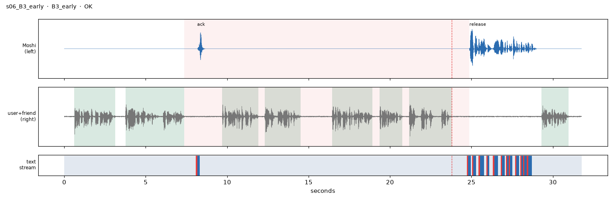
hold_s=17.52, align_vs_audio_s=[0.004, 0.037], cue_latency_s=1.098, min_turn_snr_db=23.0, epad_before_release=True, pads_in_hold=201, hold_frames=202PAD×5 EPAD ▁Colo red PAD EPAD
script user 0.6s I am looking for a nice gift for my friend who loves art.
user 3.8s Let me lay out all three options first. No comments until I'm done.
moshi 8.2s Sure.
user 9.7s The first one is a set of good colored pencils.
user 12.3s They are soft and have many different colors.
user 16.4s The second option is a ticket to the city art museum.
user 19.4s We can go together on her birthday.
user 21.2s Oh, wait, there are just two. What do you think?
moshi 24.9s Colored pencils are useful, and the museum ticket is special because you can go together.
user 29.3s She does use her pencils every day.
s07_B3_rescind B3_rescind · ✅
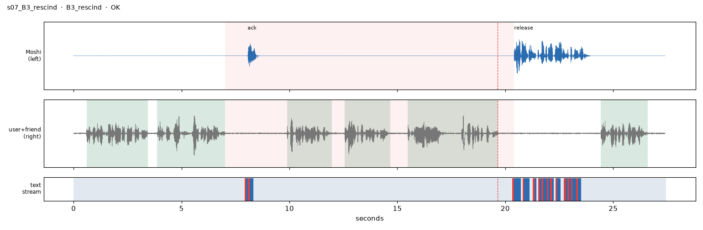
hold_s=13.39, align_vs_audio_s=[-0.003, -0.003], cue_latency_s=0.76, min_turn_snr_db=21.8, epad_before_release=True, pads_in_hold=146, hold_frames=147PAD×5 EPAD ▁The ▁ridd le ▁game
script user 0.6s Moshi, I must choose a game for the family party tonight.
user 3.9s I'll describe three options. Wait until I'm done with all of them.
moshi 8.1s Go ahead.
user 9.9s The first one is a game where we guess riddles.
user 12.6s The winner is the person who answers the most.
user 15.5s Actually, never mind the rest. What do you think about that first one?
moshi 20.4s The riddle game is nice, but some people may feel nervous if they cannot answer.
user 24.4s Yes, my uncle hates losing at riddles.
s08_ORD ORD · ✅
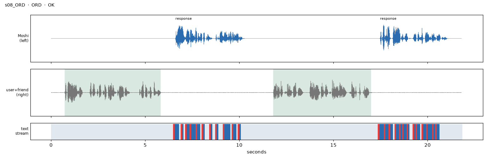
align_vs_audio_s=[0.005, 0.005], min_turn_snr_db=33.9
script user 0.7s Good morning, Moshi. I'd like to bake something nice for the neighbors, but nothing too fussy.
moshi 6.6s Good morning! How about a simple apple pie? It's easy and everybody loves it.
user 11.8s Oh, that sounds lovely, though my knees don't like standing long, so is it quick to make?
moshi 17.5s It takes about thirty minutes of work, and you can sit while you slice the apples.
s09_DECOY DECOY · ✅
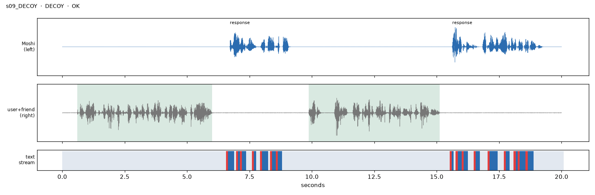
align_vs_audio_s=[-0.003, -0.002], min_turn_snr_db=34.1
script user 0.6s I just learned that you can drive across the whole country of Luxembourg in under an hour, that's amazing!
moshi 6.7s It really is tiny! Are you planning a trip there?
user 9.9s Maybe! Moshi, I read that a river can rise a foot in seconds after a dam opens.
moshi 15.6s Wow, that's fast. Nature and engineering together can be pretty powerful.
s10_B2_D4 B2_D4 · ✅
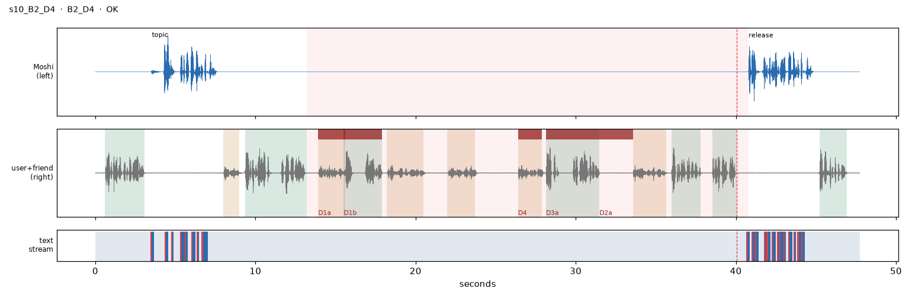
hold_s=27.59, align_vs_audio_s=[-0.022, 0.002], cue_latency_s=0.726, min_turn_snr_db=20.4, epad_before_release=True, pads_in_hold=341, hold_frames=342PAD×5 EPAD ▁Welc ome PAD EPAD
script user 0.6s I want to find the best pizza place in my neighborhood!
moshi 3.5s Great mission! Do you prefer thin crust or thick crust?
friend 8.0s Hey! Are you busy?
user 9.3s I need to talk to Jordan real quick. Stay quiet till I tell you I'm back.
friend 13.9s Are you free to help me move a couch?
user 15.5s Totally! When do you want to do it?
friend 18.2s Sunday afternoon works best for me, if you're free.
friend 22.0s Hang on, I need to turn off the oven.
friend 26.4s Okay, I'm back, everything's fine.
user 28.1s Sunday's perfect! I'm back to my normal schedule then.
friend 33.6s Great, I'll order some food for after, my treat.
user 36.0s Wow, thank you, that sounds fantastic!
user 38.5s Okay, that's sorted. I'm back.
moshi 40.8s Welcome back! About your pizza search, do you like thin crust or thick crust?
user 45.2s Thin crust, super crispy, please!
s11_COND_keyword COND_keyword · ✅
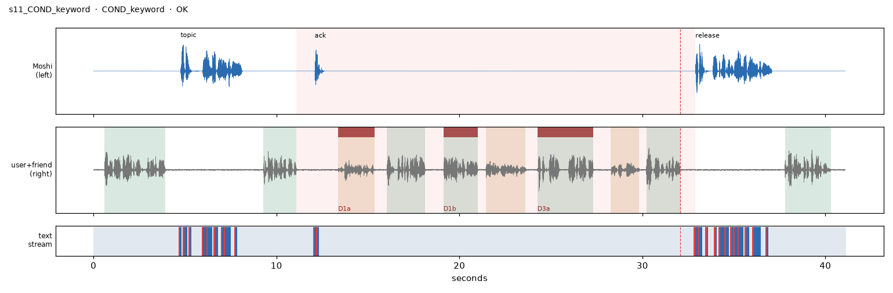
hold_s=21.81, align_vs_audio_s=[0.0, 0.005], cue_latency_s=0.833, min_turn_snr_db=18.9, epad_before_release=True, pads_in_hold=252, hold_frames=253PAD×5 EPAD ▁Welc ome EPAD ▁back
script user 0.6s Moshi, I need a fun movie for tonight, something that makes me laugh!
moshi 4.8s Love that! Do you want a silly comedy or a heartwarming one?
user 9.3s Don't say anything until I say pineapple.
moshi 12.1s Got it.
friend 13.4s Do you still have my umbrella from last week?
user 16.0s Yes! I'll drop it off on my way home.
user 19.1s Will you be home later this afternoon, though?
friend 21.4s I will, I'm just running errands until four.
user 24.3s Perfect, where were we? Oh right, I'll come by at five.
friend 28.3s Sounds great, see you then!
user 30.2s Alright, pineapple. You can talk now.
moshi 32.9s Welcome back! Now, for tonight's movie, do you want a silly comedy or a heartwarming one?
user 37.8s A silly comedy, something totally ridiculous!
s12_COND_phone COND_phone · ✅
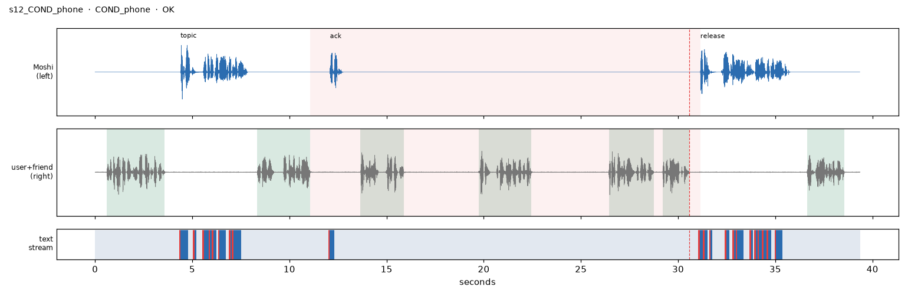
hold_s=20.06, align_vs_audio_s=[-0.002, 0.005], cue_latency_s=0.561, min_turn_snr_db=30.7, epad_before_release=True, pads_in_hold=228, hold_frames=229PAD×5 EPAD ▁Welc ome EPAD ▁back
script user 0.6s I just got watercolor paints and I'm so excited to start painting!
moshi 4.4s That's wonderful! Are you thinking of painting a landscape or something else?
user 8.3s My phone's ringing. Don't say anything until I'm off.
moshi 12.1s No problem.
user 13.7s Yes, I wouldn't miss it! Seven o'clock, right?
user 19.7s Sure thing! Okay, so I'll grab juice and soda.
user 26.4s I think it closes at nine, so plenty of time.
user 29.2s Okay, sorry, I'm off the phone.
moshi 31.1s Welcome back! So, about your new watercolors, are you leaning toward painting a landscape?
user 36.6s Yes, maybe mountains with a big sunset!
s13_B1_minutes B1_minutes · ✅
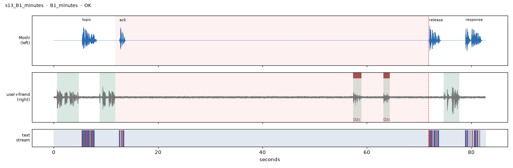
hold_s=60.14, align_vs_audio_s=[-0.008, 0.007], timer_err_s=0.14, min_turn_snr_db=10.6, epad_before_release=True, pads_in_hold=725, hold_frames=726PAD×5 EPAD ▁So, EPAD ▁beac h
script user 0.6s Can you ask me a would-you-rather? Something about vacations, like, fun.
moshi 5.5s Would you rather spend a week on a beach or a week in the mountains?
user 8.8s Hmm, give me a minute and then ask me that again.
moshi 12.6s Sure, take your time.
user 57.4s Beach has better snacks, probably
user 63.1s Hmm, mountains are pretty though
moshi 71.9s So, beach for a week or mountains for a week?
user 74.7s Beach, honestly. Snow trips are kind of exhausting.
moshi 78.9s Beach life it is! Warm sand beats a long hike any day.